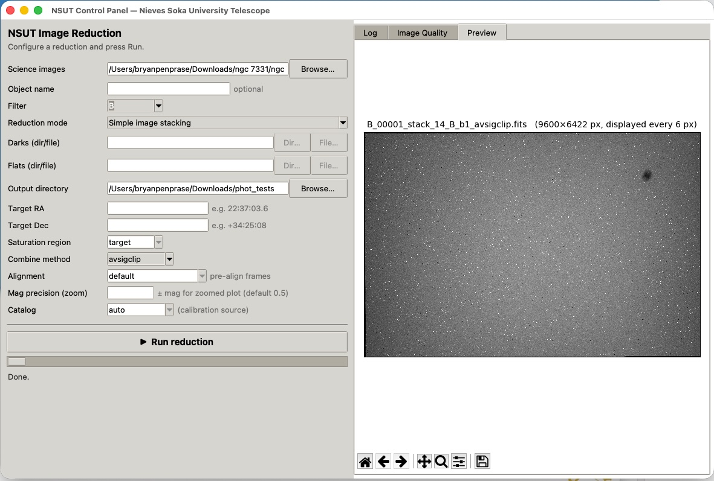
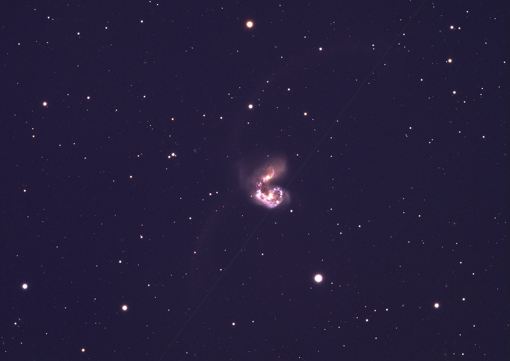

NSUT GUI
A fully automated system for image processing, creating stack additions, flat fielding, and even differential photometry.
NSUT Software Overview
The entire Nieves Observatory software system makes interactive GUI-controlled image processing possible for students.
This page now includes the latest NSUT software upload set, including the GUI workflow tutorial and updated Python tools for image quality checks, calibration, stacking, photometry, plotting, and RGB image generation. Files placed in software and content/software appear in the download listing below.
The recommended first step is the GUI tutorial, which walks through setup and operation of the NSUT graphical workflow for the software suite.

A fully automated system for image processing, creating stack additions, flat fielding, and even differential photometry.
An easy-to-use system for creating composite color (RGB) images with image alignment and interactive color-balance controls.
Scans FITS directories for saturation using target, center, or full-frame modes, then exports CSV diagnostics.
Combines and aligns FITS frames using average, median, sigma-clip, or brightest-pixel rejection methods.
Computes differential photometry from WCS-solved images with target/reference tracking and diagnostics.
Converts photometry CSV output into two-page, publication-quality multi-panel light curve reports.
Follow the RGB color composite workflow tutorial for creating publication-quality tricolor images from calibrated FITS channels.
Open RGB Image Generator Tutorial (PDF)
Launch the interactive RGB compositor and align channels with live color-balance controls.
Open the RGB tutorial in PDF or DOCX format.

| File | Purpose |
|---|---|
| NSUT_GUI_Tutorial.pdf | Step-by-step guide for installing and operating the NSUT GUI workflow. |
| NSUT_Software_Suite_Overview.pdf | High-level overview of the complete software suite and recommended workflow. |
| nsut_gui.py | Main graphical launcher for coordinating image-processing tasks. |
| exposecheck.py | Finds saturated FITS frames and exports exposure diagnostics. |
| fits-image-combiner.py | Stacks/calibrates FITS images into cleaned and aligned products. |
| photcalib_robust_fixed.py | Performs robust differential photometry on calibrated time-series data. |
| plot_differential_photometry.py | Generates publication-ready differential-photometry plots. |
| rgb_image_gui.py | Creates RGB composites from calibrated astronomical image channels. |
| sample_diagnostic.pdf | Example output report used for quick quality-control checks. |
| sn2025_lightcurve.pdf | Example light-curve output from the updated plotting pipeline. |